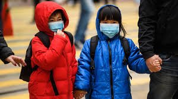

A novel strain of coronavirus — SARS-CoV-2 — was first detected in December 2019 in Wuhan , a city in China’s Hubei province with a population of 11 million, after an outbreak of pneumonia without an obvious cause. The virus has now spread to over 200 countries and territories across the globe, and was characterised as a pandemic by the World Health Organization (WHO) on 11 March 2020

What are coronaviruses?
SARS-CoV-2 belongs to a family of single-stranded RNA viruses known as coronaviridae, a common type of virus which affects mammals, birds and reptiles.
In humans, it commonly causes mild infections, similar to the common cold, and accounts for 10–30% of upper respiratory tract infections in adults. More serious infections are rare, although coronaviruses can cause enteric and neurological disease. The incubation period of a coronavirus varies but is generally up to two weeks.
Previous coronavirus outbreaks include Middle East respiratory syndrome (MERS), first reported in Saudi Arabia in September 2012, and severe acute respiratory syndrome (SARS), identified in southern China in 2003. MERS infected around 2,500 people and led to more than 850 deaths while SARS infected more than 8,000 people and resulted in nearly 800 deaths. The case fatality rates for these conditions were 35% and 10%, respectively.
Viral infections Measures to guard against the infection work under the current assumption that SARS-CoV-2 is spread by respiratory droplets, although face masks are unlikely to prevent infection A novel strain of coronavirus — SARS-CoV-2 — was first detected in December 2019 in Wuhan, a city in China’s Hubei province with a population of 11 million, after an outbreak of pneumonia without an obvious cause. The virus has now spread to over 200 countries and territories across the globe, and was characterised as a pandemic by the World Health Organization (WHO) on 11 March 2020. As of 9:00 on 16 August 2020, there were 21,294,845 laboratory-confirmed cases of coronavirus disease 2019 (COVID-19) infection globally, with 761,779 reported deaths. The number of cases and deaths outside of China overtook those within the country on 16 March 2020. As of 9:00 on 16 August 2020, there have been 318,484 confirmed cases of the virus in the UK and, as of 15 August 2020, 41,366 of these have died (in all settings, within 28 days of the test). This article gives a brief overview of the new virus and what to look out for. It provides answers to the following questions:
- What are coronaviruses?
- Where has the new coronavirus come from?
- How contagious is COVID-19?
- How is COVID-19 diagnosed?
- What social distancing measures are being taken in the UK?
- What is happening with testing for COVID-19?
- What should I do if a patient thinks they have COVID-19?
- What can I do to protect myself and my staff?
- What about ‘business as usual’ during the pandemic?
- Will the government provide financial help during the pandemic?
- How can cross-infection be prevented?
- There has been a lot of talk in the news and on social media about how certain medications can exacerbate the symptoms of COVID-19, what is the current advice around these medications?
- Where can I find information on managing COVID-19 patients?
- Is the coronavirus pandemic likely to precipitate medicines shortages?
- Are there national clinical trials of potential drugs to treat covid-19?
What are coronaviruses? SARS-CoV-2 belongs to a family of single-stranded RNA viruses known as coronaviridae, a common type of virus which affects mammals, birds and reptiles. In humans, it commonly causes mild infections, similar to the common cold, and accounts for 10–30% of upper respiratory tract infections in adults. More serious infections are rare, although coronaviruses can cause enteric and neurological disease. The incubation period of a coronavirus varies but is generally up to two weeks. Previous coronavirus outbreaks include Middle East respiratory syndrome (MERS), first reported in Saudi Arabia in September 2012, and severe acute respiratory syndrome (SARS), identified in southern China in 2003. MERS infected around 2,500 people and led to more than 850 deaths while SARS infected more than 8,000 people and resulted in nearly 800 deaths. The case fatality rates for these conditions were 35% and 10%, respectively. SARS-CoV-2 is a new strain of coronavirus that has not been previously identified in humans. Although the incubation period of this strain is currently unknown, the United States Centers for Disease Control and Prevention indicate that symptoms may appear in as few as 2 days or as long as 14 days after exposure. Chinese researchers have indicated that SARS-CoV-2 may be infectious during its incubation period.

Where has the new coronavirus come from?
It is currently unclear where the virus has come from. Originally, the virus was understood to have originated in a food market in Wuhan and subsequently spread from animal to human. Some research has claimed that the cross-species transmission may be between snake and human; however, this claim has been contested.
Mammals such as camels and bats have been implicated in previous coronavirus outbreaks, but it is not yet clear the exact animal origin, if any, of SARS-CoV-2.